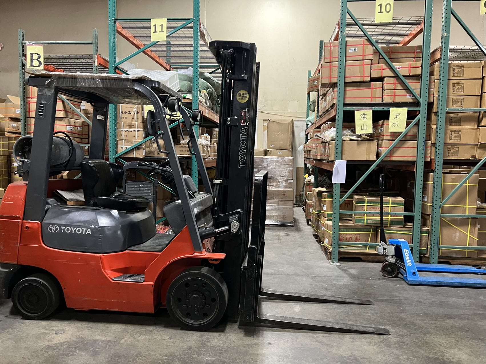
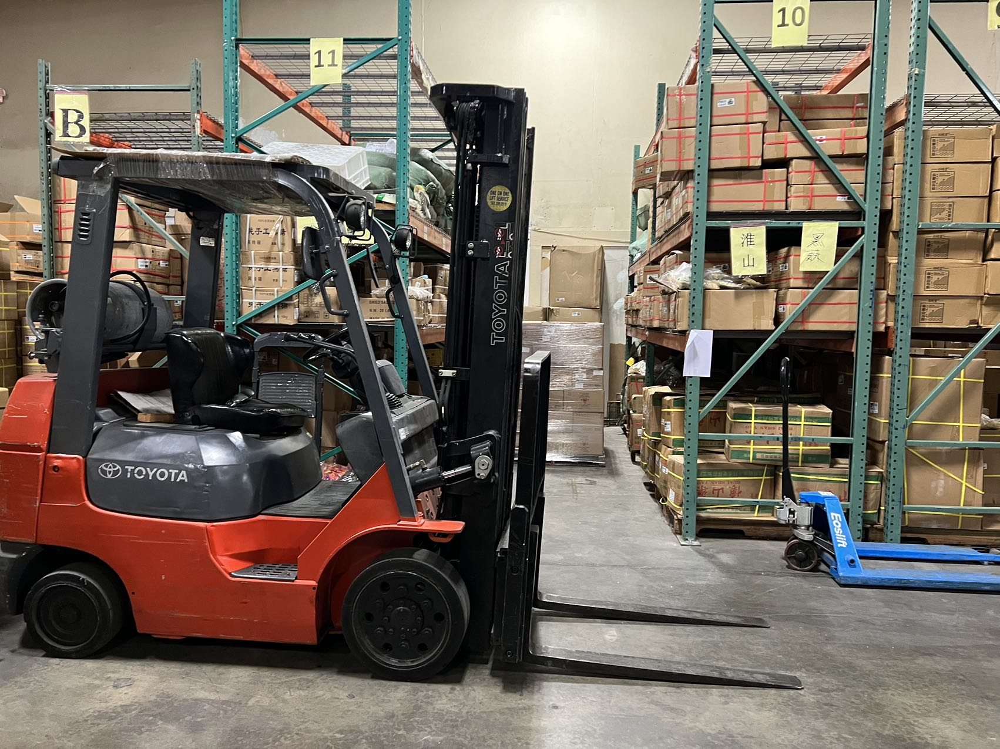
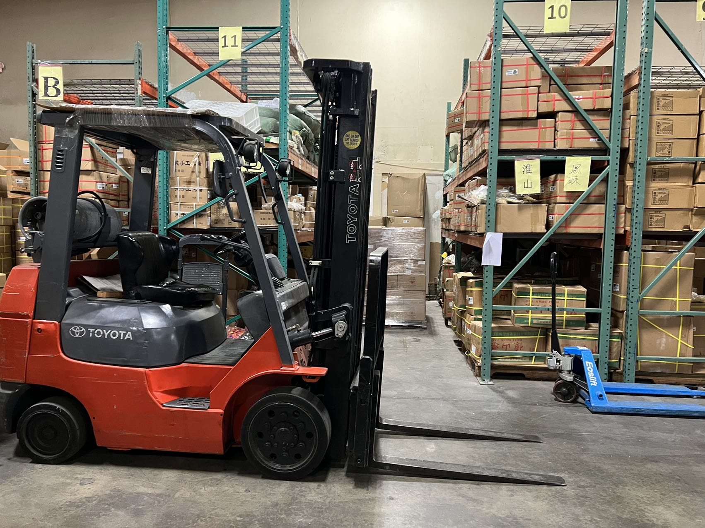

Jiazhao Luo
My name is Jiazhao Luo, and I was born in China. I came to the United States in 2017 to pursue a better education. I am currently pursuing my bachelor's degree in art, concentrating on Business Economics at the University of California, Riverside. I expect to graduate in March 2023.
When I was in China, I used to collaborate with my father on his business because I also wanted to learn how to buy in products and sell out products with the maximum profit. Moreover, I learned how to make advertisements and sell bathroom accessories to the community. Therefore, I motivate myself to walk around the community with some products and introduce them to the public, which led me to become an extroverted person. I believe it is very important to communicate with people properly, and I am very thankful to my father because he created this environment and opportunity for me to grow up.
During college, I learned how to collaborate as a team, which helped me understand that I should keep going with passion and work harder to create a better future. Also, I have a solid foundation of business expertise, and I have very strong learning skills that allow me to keep up with progress. I am self-motivated, serious, and responsible. I also have full of teamwork spirit, and I am good at communicating with others, especially with business knowledge.
Other than business, I also have some knowledge foundation of biology and chemistry. I am open-minded to asking others, learning together, and making progress together not only in business but also with little things in life.
I have good living habits and get along well with others. I like to play badminton and fish during my spare time, and during this time, I am able to make new friends since I need to ask people if I could join their team. When I go by myself, I will have to find people at the court because it is impossible to play badminton alone. During break time, I will talk to them and ask them if they want to share contact for further games. Also, I will get to know their profession or their major, and this is also very important in my career. Furthermore, I also get to meet people during fishing since I will ask for techniques and baits they use. Because of this, I got to meet a man who brings me fresh fish whenever he fishes.
I possess high professional qualities, a cheerful personality, diligent study, a serious attitude, sufficient self-learning ability, and adaptability. Also, I am proficient in using various professional software and fixing computers. When something goes wrong with my computer, I will be able to find out the bug and fix it. Moreover, when my family gets some confusion or restriction from accessing certain applications, I will be able to make them work normally.
I am a person who works hard, studies hard, and I am brave in innovation. Moreover, I am familiar with and master the relevant knowledge of Business Economics. I learn to work hard during the four years of university, study hard, and apply what I have learned. I believe this is what the world is looking for.
Experience
Accountant
• Calculate payments
• Create Exel sheets to generate financial statements
• Collaborate with members in the warehouse to obtain information
Tutor
• One on one communication
• Explain material clearly so that the student can do well in class
Advertisement
• Write descriptions about products and services
• Customer service to solve their questions
• Create platforms for people to understand the product better
• Design website to attract people
Education
UC Riverside
Portfolio
 

